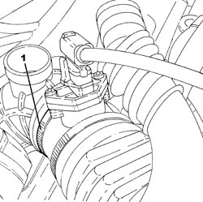
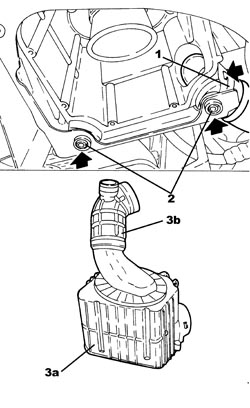
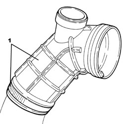

1048A10 AIR FILTER ASSEMBLY - R.R.
- Path
- Procedures > 10 ENGINE > 1048 ENGINE AIR SUPPLY CIRCUIT > 1048A VACUUM AIR CIRCUIT > 1048A10 AIR FILTER ASSEMBLY - R.R.
- Kind
- repair procedure (removal / refitting; the operation number is the code)
- Applies to
- engines: 1.9 JTS, 2.2 JTS, 1.9 JTD 8V, 1.9 JTD 16V, 2.4 JTD 20V; all production periods
- Interactive page
- https://sloeber94.github.io/elrnDB/alfa/159/en/#/939010512
Applies to: engines: 1.9 JTS, 2.2 JTS; all production periods
 Removing
Removing
 Refitting
Refitting- Position the vehicle on a lift.
Op. 1048A28 VACUUM AIR CIRCUIT RESONATOR PIPE - R+R
1. Loosen the band securing the air flow meter to the corrugated hose.

Applies to: engines: 1.9 JTS, 2.2 JTS; all production periods
Op. 1048A14 AIR CLEANER FILTER ELEMENT - REPLACE.
1. Release the fastening tabs and disconnect the cold air intake from the air filter casing.
2. Release the pins for the air filter casing from the mounting bracket.
3. Move the front bumper away as necessary and extract the air filter (3a) complete with corrugated hose (3b).

Applies to: engines: 1.9 JTS, 2.2 JTS; all production periods
1. At the bench, loosen the band and disconnect the corrugated hose from the air filter casing.

Applies to: engines: 1.9 JTS, 2.2 JTS; all production periods
Refitting
Removing- Connect the corrugated hose to the air filter casing and secure it using the band.
- Place the air filter complete with corrugated hose in its housing and position the pins in the seats in the mounting bracket.
- Connect the cold air intake to the air filter casing checking that the fastening tabs are attached.
Op. 1048A14 AIR CLEANER FILTER ELEMENT - REPLACE.
- Tighten the band securing the air flow meter to the corrugated hose.
Op. 1048A28 VACUUM AIR CIRCUIT RESONATOR PIPE - R+R
- Remove the vehicle from the lift.
Applies to: engines: 1.9 JTD 8V, 1.9 JTD 16V, 2.4 JTD 20V; all production periods
Removing
Refitting- Position the vehicle on a lift.
Op. 1048A28 VACUUM AIR CIRCUIT RESONATOR PIPE - R+R
1. Loosen the band securing the air flow meter to the corrugated hose.
Applies to: engines: 1.9 JTD 8V, 1.9 JTD 16V, 2.4 JTD 20V; all production periods
Op. 1048A14 AIR CLEANER FILTER ELEMENT - REPLACE.
1. Release the fastening tabs and disconnect the cold air intake from the air filter casing.
2. Release the pins for the air filter casing from the mounting bracket.
3. Move the front bumper away as necessary and extract the air filter (3a) complete with corrugated hose (3b).
Applies to: engines: 1.9 JTD 8V, 1.9 JTD 16V, 2.4 JTD 20V; all production periods
1. At the bench, loosen the band and disconnect the corrugated hose from the air filter casing.
Applies to: engines: 1.9 JTD 8V, 1.9 JTD 16V, 2.4 JTD 20V; all production periods
Refitting
Removing- Connect the corrugated hose to the air filter casing and secure it using the band.
- Place the air filter complete with corrugated hose in its housing and position the pins in the seats in the mounting bracket.
- Connect the cold air intake to the air filter casing checking that the fastening tabs are attached.
Op. 1048A14 AIR CLEANER FILTER ELEMENT - REPLACE.
- Tighten the band securing the air flow meter to the corrugated hose.
Op. 1048A28 VACUUM AIR CIRCUIT RESONATOR PIPE - R+R
- Remove the vehicle from the lift.
Topics linked from this page (2)
Topics that link to this page (12)
- 1016C10 SINGLE CYLINDER HEAD - R.R. AND REPLACE GASKET
- 1036B10 OVERHEAD CAMSHAFT IN CYLINDER HEAD - R.R ON VEHICLE
- 1048A13 AIR FILTER MOUNT R R
- 1048A23 COLD AIR INTAKE FOR AIR FILTER - R.R
- 1048A40 HOSE FROM AIR FILTER TO FLOW METER - R + R
- 1048B50 INTERCOOLER - R + R
- 1060G90 SYSTEM CABLE LOOM - R.R.
- 1072B10 INLET MANIFOLD - R + R AND REPLACE SEAL
- 1084B40 ENGINE OIL DELIVERY PIPE TO TURBOCHARGER - R + R
- 1084B42 ENGINE OIL RETURN PIPE FROM TURBO - R + R
- 4130B52 HEAT EXCHANGER PIPE - R+R
- 5040A40 AIR CONDITIONING CONDENSER - R+R